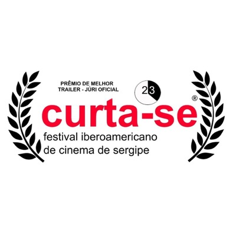
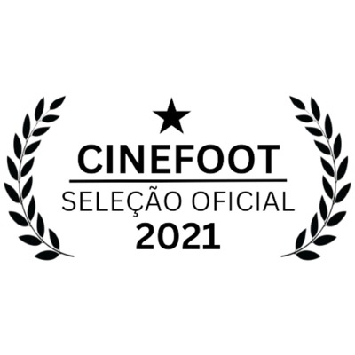
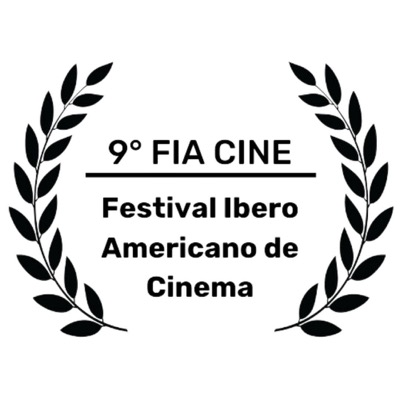
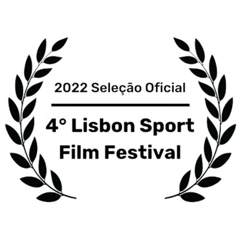
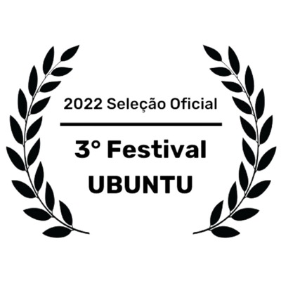
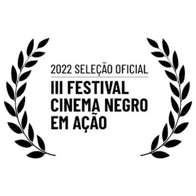
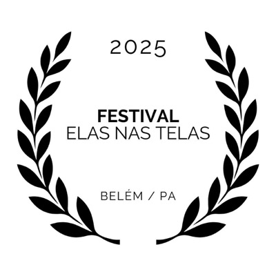
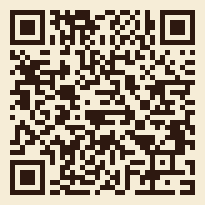

23 minutos de Brasil. Futebol, ancestralidade africana e cultura afro-brasileira. Uma travessia pela quebrada, pelo terreiro, pela quadra de futsal e pela escola pública.
Em 2020, Mônica Saraiva da Silva e Sebastián Acevedo Vásquez começaram uma travessia pela cultura que o futebol cria quando a bola para nas quebradas, quadras de terra e campos de várzea. Dois anos depois, o documentário A Bola Conecta estreava como obra socioeducativa: não apenas um filme para assistir, mas uma ferramenta pedagógica para construir.
O documentário atravessa diferentes territórios do Brasil para mostrar como o futebol carrega consigo memórias, línguas, religiões e histórias que raramente aparecem nas narrativas oficiais do esporte. Da Bahia a Pernambuco, da quebrada ao terreiro, A Bola Conecta revela o futebol como prática cultural, educativa e política.
O documentário abre conversas sobre:
O documentário foi pensado como ferramenta pedagógica. Funciona em três formatos principais:
1. Cine-debate (1 aula, 90 minutos): Exibição seguida de mediação. Ideal para introduzir o tema.
2. Oficina (4 a 8 encontros): Combinado com as fichas Copa 2026 para aprofundamento.
3. Piloto institucional (4 a 8 semanas): Integrado ao currículo, com produção autoral dos alunos.
Ver Metodologia ABC completaO documentário pode ser assistido online mediante inscrição. Para exibições institucionais (escolas, universidades, eventos), entre em contato para licença de uso.
Exibição online: em breve via formulário de inscrição.
Exibição institucional: contato.gondwana@gmail.com
O documentário circulou em mostras, festivais e espaços acadêmicos no Brasil e fora do país. Esta é a galeria dos reconhecimentos oficiais recebidos até agora. Lista em atualização no press kit.







Para emissoras, programadoras e mostras no Brasil: /imprensa
Para usar o documentário como ferramenta pedagógica, recomendamos:
Modelo de contribuição aberta
O documentário e a Metodologia ABC circulam abertos para a comunidade educativa. Quem quiser apoiar a próxima edição, contribui com uma contribuição livre via Pix. Quem não quiser, também leva. Toda contribuição é transparente e vira prestação de contas aberta.
Apoiar a circulação aberta via PixChave Pix (CNPJ): 62.085.700/0001-83
da Silva e Vásquez Formação e Consultoria
